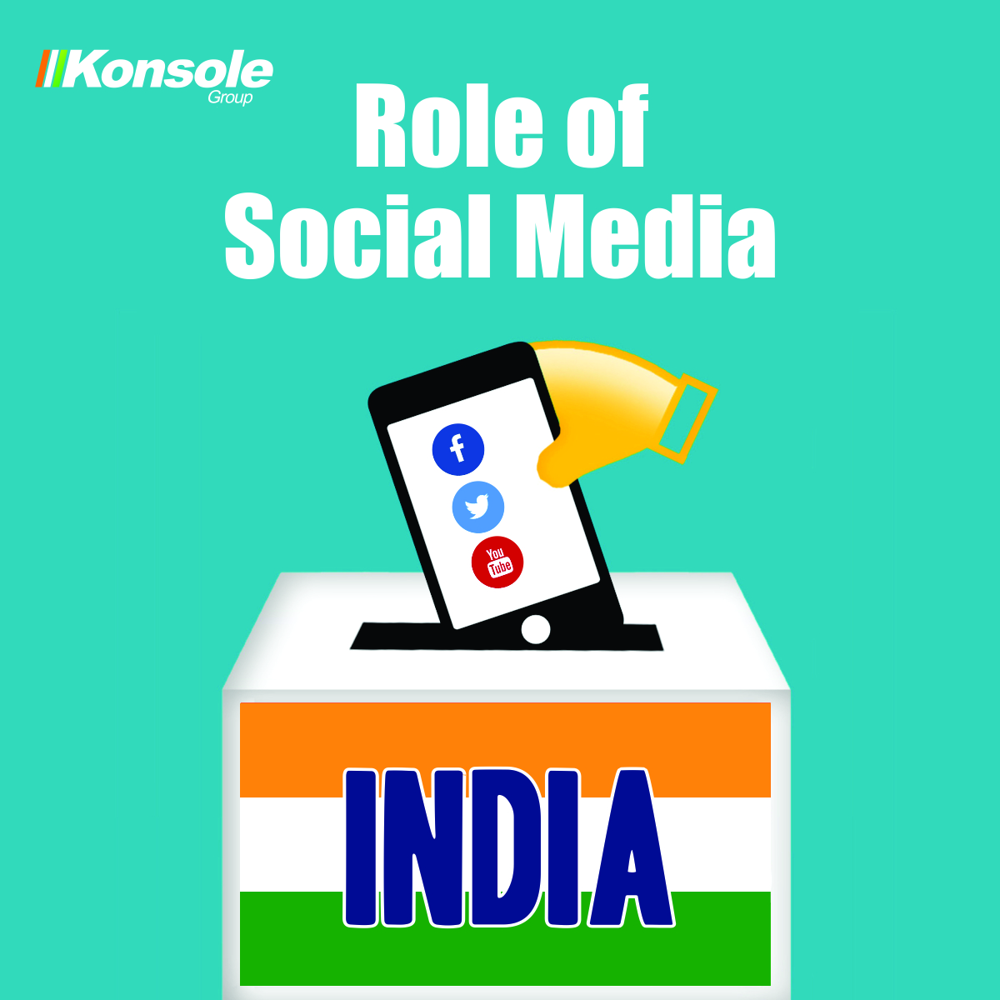

HOME
Digital Marketing has become an essential requirement now a days,no matter what field it is .It is demanding as it helps to know and understand your bussiness.If suitable carrying out of online branding is not done,then the bussiness remain unknown to its probable clients.
First of all we need to understand the digital marketing and politics both want the same thing: convince people to do something.convince them to buy a product.convince them to vote for you.
In 2014 General Election of India ,BJP team under leadership of Narendra Modi for the first time successfully used Social Media focused Digital marketing for Politicians.In 2019 election we witnessed extreme surge in use of services of political digital marketing agency in india .All major National and State/Regional parties as well as indivisual candidates took services of digital marketing for political campaign in India.
We are a political election campaign service provider .Providing Digital politica marketing and social media services to politician.We work on campaigns forcause that support a political party or a particular candidate's political position, effectively canvassing for them.We have professional and skilled staff , we work for political parties to develop strategies, public relation and social media contacts mainly .We use digital platforms to understand public opinionn and develop programs that persuade peopleto act.
Our election campaign strategy team comprises of election strategists,social media experts,software developer,website developer, graphic designer,polling expert,data scientist etc.we worked for political parties and politician during the last Delhi assembly election.
Digital marketing is over taking traditional marketing in almost every way possible, unlike the Traditional campaigning; Digital Marketing for political campaigns is a better option that allows a political campaign to target the requiredaudience in an economical manner. Digital marketing political campaigns helps in creating an aura for the candidate before he meets his potential voters. Due to political social media activities, the voters are well aware about the candidate and so it facilitates the candidate’s easy acceptance by the voters.
Social media marketing in politics is playing a huge role in Indian democracy.Times are changing and political parties and politicians have found possibly the easiest way of reaching out to aspiring St wie: youth of the country.Digital marketing for political campaigns in India and Across the Globe is learning that along with advertising on traditional mediums such as televisionand newspapers, they must invest in digital marketing if they want to compete with their rival parties.
Social media is a very fast communicating medium. The new trend is to reach out to the voters through social media. In order to reach more voters in less time, political parties are fast recording their presence on social media. Social media marketing helps to validate your brand. Social media gives you a chance to talk about what you know and what you want to be known for. Sharing your knowledge will attract potential professional and personal connections
However, with the help of Digital Marketing you can produce a Buzz by following these footprints: -